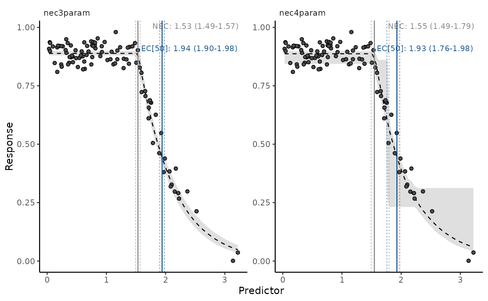
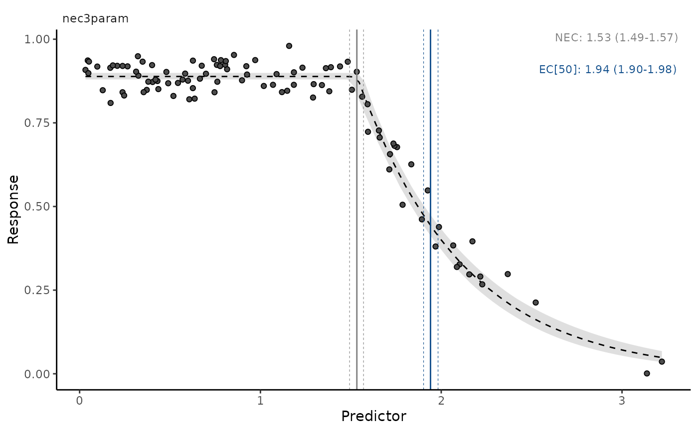
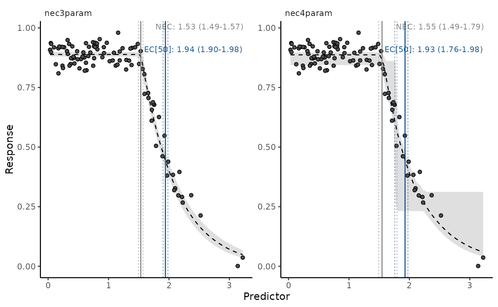
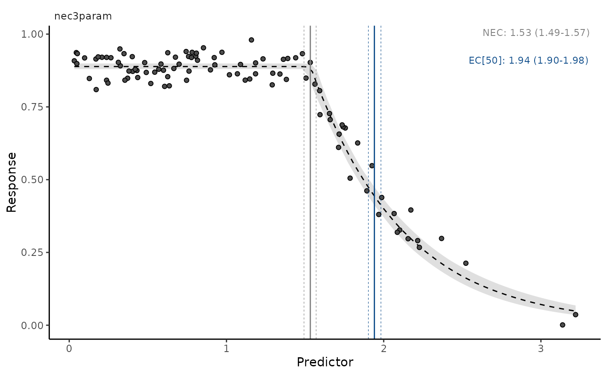

bayesnec standard ggplot2
plotting method.
# S3 method for bayesmanecfit
autoplot(
object,
...,
nec = TRUE,
ecx = FALSE,
all = FALSE,
plot = TRUE,
ask = TRUE,
newpage = TRUE,
multi_facet = TRUE
)Arguments
| object | An object of class |
|---|---|
| ... | Additional arguments to be passed to |
| nec | Should NEC values be added to the plot? Defaults to TRUE. |
| ecx | Should ECx values be added to the plot? Defaults to FALSE. |
| all | Should all individual models be plotted separately (defaults to FALSE) or should model averaged predictions be plotted instead? |
| plot | Should output |
| ask | Indicates if the user is prompted before a new page is plotted.
Only relevant if |
| newpage | Indicates if the first set of plots should be plotted to a
new page. Only relevant if |
| multi_facet | Should all plots be plotted in one single panel via facets? Defaults to TRUE. |
Value
A ggplot object.
See also
Other autoplot methods:
autoplot.bayesnecfit()
Examples
# \donttest{
library(brms)
library(bayesnec)
options(mc.cores = 2)
data(nec_data)
test <- bnec(data = nec_data, x_var = "x", y_var = "y",
model = c("nec3param", "nec4param"), iter = 2e2,
family = Beta(link = "identity"))
#> Finding initial values which allow the response to be fitted using a nec3param model and a beta distribution.
#> Compiling Stan program...
#> Start sampling
#> Warning: The largest R-hat is 1.06, indicating chains have not mixed.
#> Running the chains for more iterations may help. See
#> http://mc-stan.org/misc/warnings.html#r-hat
#> Warning: Bulk Effective Samples Size (ESS) is too low, indicating posterior means and medians may be unreliable.
#> Running the chains for more iterations may help. See
#> http://mc-stan.org/misc/warnings.html#bulk-ess
#> Warning: Tail Effective Samples Size (ESS) is too low, indicating posterior variances and tail quantiles may be unreliable.
#> Running the chains for more iterations may help. See
#> http://mc-stan.org/misc/warnings.html#tail-ess
#> Response variable modelled as a nec3param model using a beta distribution.
#> Finding initial values which allow the response to be fitted using a nec4param model and a beta distribution.
#> Compiling Stan program...
#> Start sampling
#> Warning: The largest R-hat is 1.09, indicating chains have not mixed.
#> Running the chains for more iterations may help. See
#> http://mc-stan.org/misc/warnings.html#r-hat
#> Warning: Bulk Effective Samples Size (ESS) is too low, indicating posterior means and medians may be unreliable.
#> Running the chains for more iterations may help. See
#> http://mc-stan.org/misc/warnings.html#bulk-ess
#> Warning: Tail Effective Samples Size (ESS) is too low, indicating posterior variances and tail quantiles may be unreliable.
#> Running the chains for more iterations may help. See
#> http://mc-stan.org/misc/warnings.html#tail-ess
#> Response variable modelled as a nec4param model using a beta distribution.
#> Fitted models are: nec3param nec4param
#> Warning: Found 1 observations with a pareto_k > 0.7 in model 'nec3param'. It is recommended to set 'moment_match = TRUE' in order to perform moment matching for problematic observations.
#> Warning:
#> 2 (2.0%) p_waic estimates greater than 0.4. We recommend trying loo instead.
#> Warning: Method 'posterior_samples' is deprecated. Please see ?as_draws for recommended alternatives.
#> Warning: Found 2 observations with a pareto_k > 0.7 in model 'nec4param'. It is recommended to set 'moment_match = TRUE' in order to perform moment matching for problematic observations.
#> Warning:
#> 2 (2.0%) p_waic estimates greater than 0.4. We recommend trying loo instead.
#> Warning: Method 'posterior_samples' is deprecated. Please see ?as_draws for recommended alternatives.
test2 <- pull_out(test, "nec3param")
#> Pulling out model(s): nec3param
#> Warning: Found 1 observations with a pareto_k > 0.7 in model 'nec3param'. It is recommended to set 'moment_match = TRUE' in order to perform moment matching for problematic observations.
#> Warning:
#> 2 (2.0%) p_waic estimates greater than 0.4. We recommend trying loo instead.
#> Warning: Method 'posterior_samples' is deprecated. Please see ?as_draws for recommended alternatives.
autoplot(test2)
autoplot(test2, nec = FALSE)
autoplot(test2, ecx = TRUE, ecx_val = 50)
 # plots multiple models, one at a time, with interactive prompt
autoplot(test)
# plot model averaged predictions
autoplot(test, all = FALSE)

# plot all panels together
autoplot(test, ecx = TRUE, ecx_val = 50, multi_facet = TRUE)
#> Warning: Found 1 observations with a pareto_k > 0.7 in model 'nec3param'. It is recommended to set 'moment_match = TRUE' in order to perform moment matching for problematic observations.
#> Warning:
#> 2 (2.0%) p_waic estimates greater than 0.4. We recommend trying loo instead.
#> Warning: Method 'posterior_samples' is deprecated. Please see ?as_draws for recommended alternatives.
#> Warning: Found 2 observations with a pareto_k > 0.7 in model 'nec4param'. It is recommended to set 'moment_match = TRUE' in order to perform moment matching for problematic observations.
#> Warning:
#> 2 (2.0%) p_waic estimates greater than 0.4. We recommend trying loo instead.
#> Warning: Method 'posterior_samples' is deprecated. Please see ?as_draws for recommended alternatives.

# }
# plots multiple models, one at a time, with interactive prompt
autoplot(test)
# plot model averaged predictions
autoplot(test, all = FALSE)

# plot all panels together
autoplot(test, ecx = TRUE, ecx_val = 50, multi_facet = TRUE)
#> Warning: Found 1 observations with a pareto_k > 0.7 in model 'nec3param'. It is recommended to set 'moment_match = TRUE' in order to perform moment matching for problematic observations.
#> Warning:
#> 2 (2.0%) p_waic estimates greater than 0.4. We recommend trying loo instead.
#> Warning: Method 'posterior_samples' is deprecated. Please see ?as_draws for recommended alternatives.
#> Warning: Found 2 observations with a pareto_k > 0.7 in model 'nec4param'. It is recommended to set 'moment_match = TRUE' in order to perform moment matching for problematic observations.
#> Warning:
#> 2 (2.0%) p_waic estimates greater than 0.4. We recommend trying loo instead.
#> Warning: Method 'posterior_samples' is deprecated. Please see ?as_draws for recommended alternatives.

# }